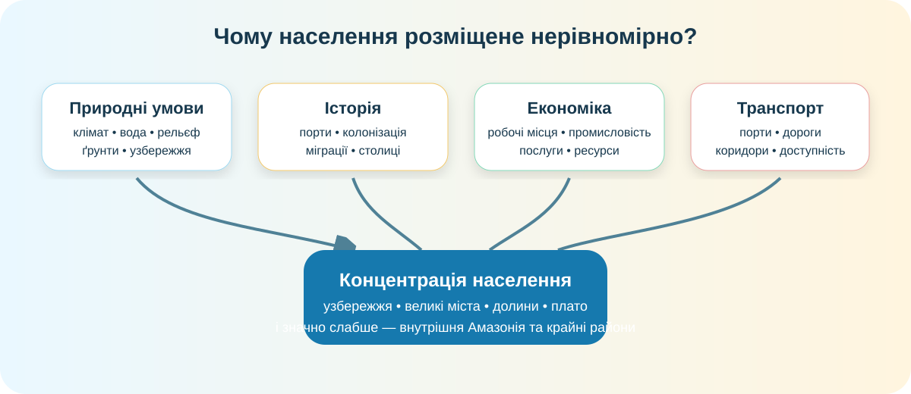

1Почніть із трьох гіпотез
А. Природа вирішує все
Люди живуть там, де сприятливі клімат, вода й рівнинний рельєф.
Б. Економіка важливіша
Населення концентрується біля портів, промислових вузлів, столиць і транспортних коридорів.
В. Потрібна комбінація
Природні умови задають можливості й обмеження, а історія та економіка змінюють початкову схему.
2Знайдіть просторовий малюнок
© OpenStreetMap contributors. Простежте атлантичне узбережжя Бразилії, район Ла-Плати, Андські столиці та внутрішню Амазонію.
3Перевірте очі даними

Таку просторову деталізацію мають частина високороздільних наборів WorldPop для картографування населення; континентальні продукти також доступні у сітці 1×1 км.
WorldPop Data Hub ↗Оцінка частки міського населення Південної Америки в одному з узгоджених наборів, використаних Світовим банком для порівняння способів вимірювання урбанізації.
NASA Earth at Night
Нічне світіння — не «карта населення», але хороший незалежний індикатор великих поселень, транспортних коридорів і електрифікованої інфраструктури.
NASA: Earth at Night ↗WorldPop
Порівняйте нічне світіння з високороздільною картою населення. Якщо обидва джерела показують схожу концентрацію, доказ сильніший.
WorldPop ↗4Міста як географічні кейси


5Країни: не вчіть список без карти
Країни Південної Америки різні за площею, населенням, виходом до океану та структурою розселення. Ваше завдання — побачити географічну логіку.
Бразилія
Найбільша за площею й населенням; сильна концентрація на південному сході та узбережжі.
Аргентина
Потужне ядро навколо Буенос-Айреса та Пампи; значно рідше заселена Патагонія.
Перу
Вузька прибережна смуга, Анди й Амазонія створюють три дуже різні просторові світи.
Чилі
Довга вузька територія між Андами й Тихим океаном: транспорт і міста витягнуті меридіонально.
6Коли розселення змінює природу

Амазонія — Wikimedia Commons.
Кейс: дороги, ферми й вогонь
NASA спостерігала в Рораймі фрагментацію лісів новими дорогами, пасовищами й сільськогосподарськими землями. У лютому 2024 року супутники зафіксували особливо сильну пожежну активність; значна частина таких пожеж пов’язана з управлінням пасовищами та розчищенням територій.
NASA Earth Observatory ↗NASA: Amazon Deforestation ↗Урбанізація
Концентрує транспорт, житло, воду, відходи й теплове навантаження.
Освоєння фронтиру
Дороги відкривають доступ до раніше віддалених лісів, після чого поширюються вирубування й землекористування.
Ризик ≠ приреченість
Однакова густота населення може давати різний екологічний результат залежно від планування, технологій і правил.
7Коротке відео з КТП
Під час перегляду випишіть: 1 природний чинник, 1 історичний, 1 економічний та 1 екологічний наслідок.
8Власний висновок перед теорією
9Теорія після дослідження
Природні чинники
Вода, комфортність клімату, рельєф і природні ресурси впливають на доступність території та вартість її освоєння. Внутрішня Амазонія, високогір’я, Атакама й Патагонія мають різні обмеження.
Суспільні чинники
Колоніальні порти, столиці, промисловість, сфера послуг, транспорт і міграції можуть посилити або навіть частково перекрити природний вплив.
Міський материк
Південна Америка дуже урбанізована: велика частка населення живе у містах, тому карта населення дедалі більше є картою міських агломерацій і транспортних вузлів.
Нерівномірність
Середня густота для країни майже ніколи не показує реального просторового малюнка. Потрібні карти високої роздільності та зіставлення з рельєфом, кліматом і мережею міст.
10CER: доведіть, а не повторіть
Питання: «Чи можна пояснити сучасне розселення населення Південної Америки переважно природними умовами?»
11Домашнє завдання
- Опрацювати §38 за електронним підручником.
- Оберіть одне місто Південної Америки й створіть коротке «географічне досьє»: положення, рельєф, клімат, вода, транспорт, одна економічна функція, одна екологічна проблема.
- Додайте один скриншот карти або супутникового зображення і підпис джерела.
§38 — електронний підручник ↗ NASA Worldview ↗ Copernicus Browser ↗